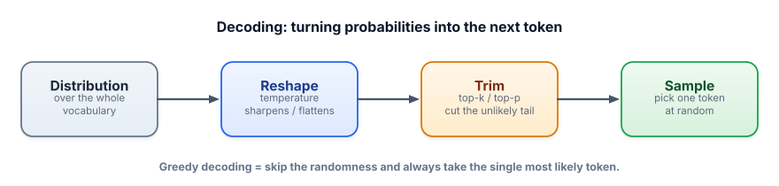
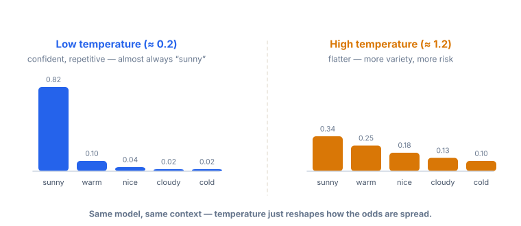

Sampling & decoding
The model hands you a probability for every possible next token. Choosing one is a separate step with its own knobs — temperature, top-k, top-p. These are the settings you’ll tune most often, and the difference between a reliable extractor and a creative writer is often just these numbers.
Why this is a separate, tunable step
In Lesson 1.1 we glossed over “pick one token.” That picking — called decoding or sampling — is where you get control. The exact same model on the exact same prompt can give a different answer each time, or the same answer every time, depending entirely on how you choose from its distribution. Want deterministic data extraction? Want a brainstorm of ten different taglines? Same model — different decoding settings.

Greedy decoding: always take the single highest-probability token. Deterministic, but can be flat and repetitive.
Temperature: a dial that reshapes the distribution before sampling. Low temperature (→0) sharpens it toward the top token (more deterministic); high temperature (>1) flattens it (more variety, more risk of nonsense).
Top-k: only consider the k most likely tokens; throw away the rest of the tail before sampling.
Top-p (also called nucleus sampling): consider the smallest set of top tokens whose probabilities add up to at least p (e.g. 0.9). Adapts automatically — few tokens when the model is confident, more when it’s unsure.
Picture a bag of coloured marbles where each colour is a possible next word, and the model decides how many marbles of each colour go in. Temperature is how much you shake the odds: low temperature means almost every marble is the favourite colour, high temperature evens the colours out. Top-k and top-p throw the rarest colours out of the bag before you draw. The analogy breaks because the model refills the bag with new odds after every single draw, based on everything drawn so far.
Temperature is the one you’ll reach for most. Here’s the whole idea in a picture — same model, same context, only the temperature changes:

Play with all three at once
This is the best way to build intuition. Move the sliders and watch the distribution reshape and the tail get cut. Then hit “Sample 20×” to feel how often each token actually gets chosen.
Sampling playground
Context: “The weather today is ___”. Order applied: temperature → top-k → top-p → sample.
Which settings for which job
| Task | Sensible starting point | Why |
|---|---|---|
| Data extraction, classification, JSON output | temperature 0 (greedy) | You want the same, most-likely answer every time — determinism and consistency beat creativity. |
| Factual Q&A, summarization | temperature 0–0.3 | Low randomness keeps it grounded and reduces invented details. |
| Code generation | temperature 0–0.4 | Code mostly has “correct” continuations; low temperature avoids creative-but-broken syntax. |
| Brainstorming, marketing copy, variety | temperature 0.7–1.0, top-p 0.9 | You want diversity; flatter sampling explores more options. |
Run a small open model locally and watch temperature change its style (downloads a free model the first time; no API key):
!pip install transformers
from transformers import pipeline, set_seed
gen = pipeline("text-generation", model="gpt2") # small, free
prompt = "The best way to learn programming is"
set_seed(42)
print("LOW temp 0.2:", gen(prompt, max_new_tokens=25, do_sample=True, temperature=0.2)[0]["generated_text"])
set_seed(42)
print("HIGH temp 1.3:", gen(prompt, max_new_tokens=25, do_sample=True, temperature=1.3)[0]["generated_text"])The low-temperature run stays safe and predictable; the high-temperature run wanders into more unusual (and sometimes incoherent) territory. That trade-off — coherence vs. creativity — is exactly what you’re dialing.
Assume one product has three LLM features: order-number extraction (300,000 requests/day), ticket summaries (100,000/day) and marketing taglines (100,000/day). Volumes are assumptions.
- See what temperature does, with numbers. Take three logits [2, 1, 0]. At T = 1: e^2 = 7.39, e^1 = 2.72, e^0 = 1, sum 11.11, so probabilities 0.67 / 0.24 / 0.09. At T = 0.5 the logits become [4, 2, 0]: 54.6, 7.39, 1, sum 63.0, so 0.87 / 0.12 / 0.02. Halving T moved the favourite from 67% to 87%.
- See top-p, with numbers. Next-token probabilities 0.50, 0.20, 0.10, 0.08, 0.05, then a long tail. With top-p 0.9: 0.50 + 0.20 + 0.10 + 0.08 = 0.88, still under 0.9, so add 0.05 to reach 0.93. Five tokens survive; the rest of the tail is gone.
- Extraction on a local model. On Ollama, temperature 0 plus a fixed seed gives repeatable output for regression tests.
- Extraction on a hosted reasoning model. On Anthropic API version 2026-10-21, sending
temperature,top_portop_kreturns a 400 error, and Claude 4.7+ models accept only defaults (Anthropic API migration 2026-10-21). Consistency comes from a JSON schema plus validation, and an eval that tracks exact-match rate per release. - Taglines. Want 5 options per request: 100,000 x 5 x 40 output tokens = 20M tokens. On Sonnet 5.5 at $10 per million output tokens (Anthropic models overview) that is $200/day. Asking for all five in one response, distinct from each other, often gives more variety than five independent samples and shares one input.
- Write the setting down. Store decoding parameters next to the prompt version, so a change is reviewed like code.
Reproducibility: if you need the same output every run (for tests, or debugging a prompt), use temperature 0 / greedy, and where available a fixed seed (the starting point for the randomness). Even then, exact determinism across hardware isn’t always guaranteed.
Don’t fight on two fronts: people often crank temperature and tighten top-p at once and get confused. Start by tuning temperature alone; reach for top-p/top-k only when you specifically want to cap the weird tail while keeping some randomness.
Everything above is how decoding works, and you still control it fully on local models (Ollama, Hugging Face transformers). Some hosted APIs no longer let you turn these dials. On the Anthropic API, version 2026-10-21 returns a 400 error if a request sends temperature, top_p or top_k, even at the default value, and Claude 4.7 and later models already accept only the defaults (Anthropic API migration guide, 2026-10-21).
So on hosted reasoning models, “set temperature 0” is not your consistency tool. You get reliable output from structured outputs (a schema the reply must match, Lesson 2.4), evals that catch drift (Track 6), and prompt design that leaves little room to wander. The table above still holds for local models and for hosted models that still expose the knobs.
- Decoding is a separate, tunable step from the model: same distribution, different ways to pick.
- Greedy = always the top token (deterministic). Temperature sharpens (low) or flattens (high) the odds.
- Top-k keeps the k most likely tokens; top-p keeps the smallest set summing to p (adapts to confidence).
- Use low temperature for facts/code/JSON, higher for brainstorming/variety.
- For reproducible outputs, use temperature 0 (and a seed if available).
You’re building a feature that extracts a customer’s order number from an email into a fixed field. Sometimes it returns the right number, sometimes a slightly different made-up one. Which change most directly helps?
You need the same answer every time for a data-extraction task. What temperature?
Your team migrates a feature to Anthropic API version 2026-10-21 and every request starts failing with a 400 error. The request body has temperature: 0. What is the fix?
With top-p = 0.9, the model's top token has probability 0.95. How many tokens are kept for sampling?
1. In the playground, set top-k = 1. What does the output distribution become, and which “knob value” of temperature is this equivalent to?
2. You want a model to write 5 genuinely different opening lines for a story. What decoding settings would you pick, and why?
3. A teammate sets temperature 0 but still sees different answers across runs for a creative task. Give one reason this can happen and one thing to check.
▸ Show solutions & reasoning
1. Top-k = 1 keeps only the single most likely token, so the “distribution” collapses to a 100% spike on that token — the model becomes deterministic. That’s exactly greedy decoding, the same effect as temperature → 0. Two different knobs, same destination, which is a nice way to see that these controls overlap.
2. Use a higher temperature (≈0.8–1.0), optionally top-p ≈ 0.9 to keep the variety sane, and generate 5 separate completions. The higher temperature spreads probability so each run explores different tokens; top-p trims only the truly unlikely tail so you get varied rather than broken. (Asking for all five in one response also helps the model make them distinct.)
3. Temperature 0 means “take the top token,” but if two tokens are nearly tied, tiny numerical differences (or different hardware/runs) can flip which one wins, and that divergence compounds over a long generation. Check whether a seed is set and supported, and remember exact determinism isn’t guaranteed across environments — for tests, assert on structure/keys rather than exact wording.
The model’s raw outputs aren’t probabilities — they’re scores called logits. They’re turned into probabilities by the softmax function, which exponentiates each logit and divides by the total so everything sums to 1. Temperature slips in as a divisor on the logits before softmax: each logit becomes logit / T.
That single division explains everything you saw. When T is small (say 0.2), dividing makes the logits larger and more spread out, so after exponentiating, the biggest one dominates — a peaky distribution. When T is large (say 1.5), dividing squashes the logits together, so the probabilities flatten toward uniform. As T → 0 the top token’s probability heads to 1 (greedy); as T grows, you approach picking uniformly at random. Top-k and top-p then act after softmax, simply zeroing out tokens — top-k by rank, top-p by cumulative mass — before you sample. Knowing this, you can predict the effect of any setting instead of guessing, which is the whole point of understanding the engine.
One lesson left in this track, and it’s the one that keeps you honest on the job: what these models genuinely can and can’t do — including why they hallucinate, and what to do about it.
labs/01_generate_and_sample.pyFree and offline once set up: Ollama with qwen2.5:7b, plus the packages in labs/README.md. From the course folder:
python labs/01_generate_and_sample.pyWhat to look for: Sections 1-3 run the same prompt at temperature 0 and 1.0 with three seeds, then the same seed twice. On our runs temperature 0 gave identical text in one run and 2 different outputs out of 3 in another, while temperature 1.0 gave 3 different outputs and the same seed reproduced exactly. With n=3 seeds this is a demo, not a rate. Edit the temperatures in the lab to see the spread change. This is the local, knobs-still-exposed side of the 2026 reality check box.
Small samples: these labs use 5 to 20 cases so they run in minutes on a laptop. Where they report a rate, they print n and a 95% Wilson interval. Read them as a demonstration of the mechanism, not as a measured rate for your system; for that you need hundreds of cases and several seeds.
▸ Recorded output (our run, 2026-11-03, qwen2.5:7b on a laptop GPU)
2) Same prompt, temperature 1.0, three different seeds
seed=1: Bengaluru in July typically experiences warm to hot temperatures with occasional thunderstorms.
seed=2: Bengaluru in July typically experiences hot and humid weather with occasional thunderstorms.
seed=3: Bengaluru in July typically experiences hot and dry weather with temperatures often soaring above 30°C.
distinct outputs at T=1.0: 3 (sampling -> usually 2-3)
3) Same seed twice at T=1.0 -> reproducible on the same machine
identical: True
4) Tokens are what you pay for: prompt vs output token counts
short prompt: prompt_tokens= 36 output_tokens= 2 prefill_s= 0.52 answer='Paris'
long prompt : prompt_tokens= 639 output_tokens= 2 prefill_s= 0.22 answer='Paris'
Look: the long prompt costs many more input tokens and more prefill time for the same answer.
5) Streaming: time-to-first-token (TTFT) vs total time
TTFT=0.36s total=2.54s chunks=16 decode_tokens_per_s=7.3
Look: streaming does not make generation faster; it shows the first words sooner.Your numbers will differ a little run to run. Full log: labs/outputs. Source: labs/01_generate_and_sample.py.
Warm-up. Logits are [3, 1]. Compute the probability of the first token at T = 1 and at T = 2.
▸ Solution
T = 1: e^3 = 20.09, e^1 = 2.72, p = 20.09 / 22.81 = 0.88. T = 2: logits become [1.5, 0.5]: e^1.5 = 4.48, e^0.5 = 1.65, p = 4.48 / 6.13 = 0.73. Doubling temperature dropped the favourite from 88% to 73%, the flattening effect.
Transfer. Your nightly regression test compares exact output strings from a hosted model and fails randomly. You cannot set temperature on that API. Redesign the test.
▸ Solution
Stop asserting exact strings. Ask for structured output (a JSON schema) and assert on fields: types, allowed values, and exact match only on fields that should be deterministic, like an extracted order number. For free text, score with rules or an LLM judge against a rubric, run each case several times, and gate on a pass rate (say 95%) rather than on one sample. Track the pass rate per release so drift shows up as a trend.
Stretch. Explain why greedy decoding can produce repetitive loops in long generations, and why nucleus sampling was proposed as a fix.
▸ Solution
Greedy always takes the single most likely token. Once a phrase repeats, the context makes repeating it again even more likely, so greedy can get stuck in a loop. Holtzman et al. (2019) showed that human text is not made of only the most likely tokens, and that sampling from the full distribution picks junk from the long tail. Nucleus (top-p) sampling samples only from the smallest set covering p of the mass: it keeps variety where the model is unsure and cuts the junk tail.
Junior What does temperature do?
▸ Model answer
The model outputs scores called logits for every possible next token. Temperature divides those scores before softmax turns them into probabilities. Low temperature sharpens the distribution so the top token almost always wins, which suits extraction, classification and code. High temperature flattens it, giving more variety for brainstorming but more risk of nonsense. Temperature near 0 approximates greedy decoding. Note that some hosted APIs, such as Anthropic's 2026-10-21 version, no longer accept it.
Mid Is temperature 0 fully deterministic? How do you get reproducible outputs?
▸ Model answer
Not always. Ties or near-ties between tokens, floating-point differences across GPUs, batching with other requests, and model updates can all change output even at temperature 0. On local models I set temperature 0 and a seed and pin the model version. On hosted APIs, especially ones that no longer expose sampling settings, I design for variation: structured outputs with a schema, validation, tests that assert on fields and pass rates, and evals run per release. Reproducibility is something you build into the system around the model.
Senior Hosted reasoning models increasingly remove sampling controls. How does that change your reliability strategy?
▸ Model answer
Sampling settings were always a weak reliability tool; they reduce variance but not error. Without them, I lean on constrained output (JSON schema or strict tool definitions), validation with retry-and-feedback, deterministic code for anything computable, and evals as a release gate with pass-rate thresholds. For tasks that need variety, I ask for multiple distinct candidates in one call. For tasks that need exact repeatability, such as tests or audits, I cache responses by input hash or use a local model where I control decoding.